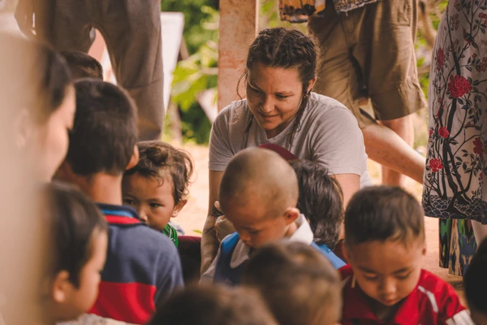

The truth is you can be orphaned again and again and again.
The truth is, you will be. And the secret is, this will hurt less and less
each time until you can't feel a thing. Trust me on this.


An orphanage is a residential institution, total institution or group home, devoted to the care of orphans and children who, for various reasons, cannot be cared for by their biological families. The parents may be deceased, absent, or abusive. There may be substance abuse or mental illness in the biological home, or the parent may simply be unwilling to care for the child. The legal responsibility for the support of abandoned children differs from country to country, and within countries.

Orphans are children who have lost their parents and are often left without a home, food, or education. There are many ways to help orphans, including donating money, food, clothing, or your time. You can also sponsor an orphan, which means providing financial support for their basic needs. Every little bit helps, so please consider donating to help orphans in need.
A person needs a set of social features and personal capabilities to interact with themselves and other people in and around their environment and make a decision that requires high ability, also to find solutions to various kinds of problems. Moreover, the skills required to deal positively with any condition to get the desired outcome is called life skills.